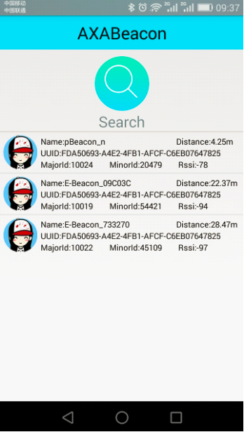
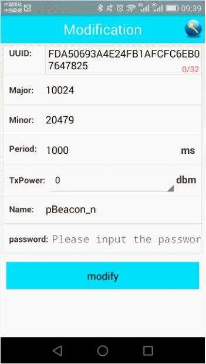

本指引将为你讲解如何将你的设备接入“微信摇一摇周边”。如果你希望更快捷地接入，建议请设备供应商完成设备配置。
【配置简述】
第一步：请确定你的设备可以重新配置UUID、Major、Minor
● 市场上大部分的设备都支持重新配置UUID、Major、Minor，但并非所有设备均可自由进行配置，具体请询问你的设备供应商。
第二步：安装手机配置程序
● 若设备厂商提供了配置程序，请下载指定的程序并按流程操作
● 若设备厂商未提供配置程序，你需要使用iPhone4S以上、IOS7.0以上版本的手机，前往appstore下载AXABeacon的配置工具，常见的有LightBlue、EABeacon、iBeacon、RealKit等
第三步：将设备信息配置到你现有的设备中
● 在“摇一摇周边商户管理后台”进行“新增设备”后，你会获得系统生成的《设备信息列表》，列表中的UUID、Major、Minor即是你需要配置的设备信息
● 详细配置流程请参考下面的“流程演示“
● 某些配置程序（比如LightBlue）可能需要将Major、Minor转换成十六进制数字，请特别留意
第四步：重启设备，验证配置是否生效
● 详细流程请参考下面的“流程演示“
【流程演示】
下面以AXABeacon配置程序为例，简单演示设备的配置流程：
1. 打开需要配置的设备开关（建议关闭或远离附近的其他设备，以避免其他设备的信号干扰）
2. 打开手机蓝牙，靠近需要配置的设备，打开AXABeaconn程序，按信号强度找到可配置的设备，并点击进入下一级页面

3. 自动带入设备的“UUID”，确认设备信息无误，点击“MODIFY”按钮进行配置

至此，设备配置完成，你可以用以下方式验证配置是否成功：
1. 重新启动设备（关闭设备开关后，再重新打开即可）
2. 使用任意手机，打开蓝牙并靠近设备，进入微信摇一摇，等待“周边”出现，摇出激活页面即可